01 完整PPO训练研究报告
我们完成了三个真实规模的本地MicroDuck运动策略训练，建立后续所有闭环比较的模型底座。三个策略不等于官方发布权重的逐位复现，也不能仅凭训练回报给故障鲁棒性排名。
整理日期 2026年10月15日 本轮仅分析已有数据 不新增实验
工作范围
三个本地来源seed42、123、2026，4096并行环境，24步rollout，最终checkpoint标签3999。
我们如何完成这项工作
沿用公开提交cb70b792312d559a4da09064d92009079671815f的任务和架构。42和123最终谱系各含4000个rollout、393,216,000条环境转移；2026从3250恢复，最终含4001个rollout、393,314,304条转移。图册直接解析四个真实运行目录的TensorBoard，保留全部已记录标量。
现有结果及解释
1. seed42最终训练平均回报118.5304，最高127.9663发生在1438；最终平均回合长度960.26步，训练nan记录为0。该运行记录墙钟约11.98小时。
2. 2026父阶段日志到3272，但有效恢复点为3250。图中只把父阶段至3250与恢复段3250—3999作为最终模型谱系展示；重复的3250标签不能简单平均，父阶段3251—3272不计入最终有效训练预算。
3. 后期训练回报受到课程难度、命令和奖励权重变化影响，回报下降不自动代表部署性能退化。正常任务、推扰和传感器故障应查看独立评估报告。
完整结果表
阶段、条件和命令分别保留。未记录的指标显示未记录，不按0填充。表内百分比为存活，不是任务成功率。
查看本工作全部3个汇总单元
图表及读图注释
读图注释 rollout是一批采样，不是完整episode。4096×24=98,304条环境转移；同一回合可能跨多个rollout。
读图注释 图中所有训练标量使用原日志定义和原尺度，未平滑。fell_over等训练聚合项不是以固定首回合为分母的跌倒百分比。
英文坐标速查：survival 是规定时长存活，不是任务完成率；duration / seconds 是首回合有效寿命；vx 是前向速度，XY 是平面速度；yaw 是绕竖直轴旋转；MSE 是动作拟合平方误差；pp 是百分点，例如90%到80%为下降10个百分点。完整解释见读图指南。
图1 三个来源的训练日志 Curriculum
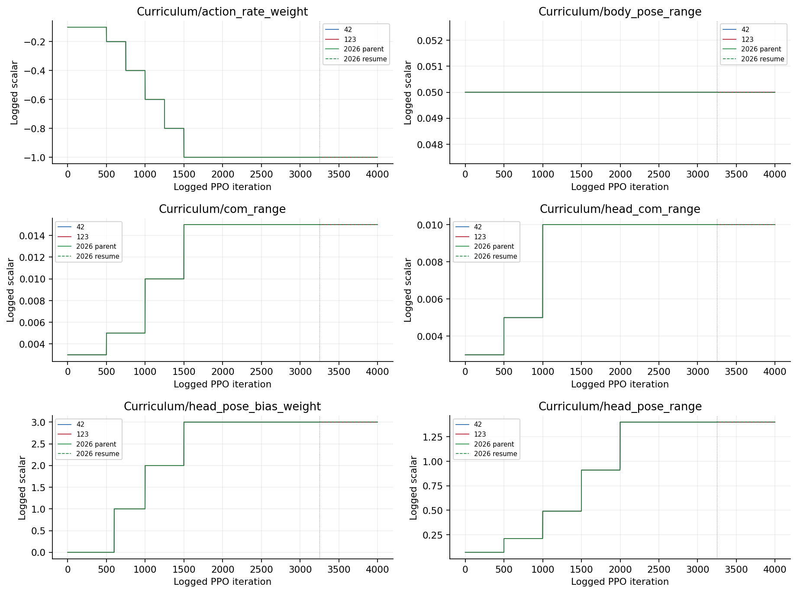
横轴为原日志迭代编号，未平滑。2026实线为保留的parent至3250，虚线为恢复段3250至3999；重复编号不合并为同一训练轮，丢弃parent的3251至3272。训练聚合量不是闭环评估百分比。图2 三个来源的训练日志 Curriculum
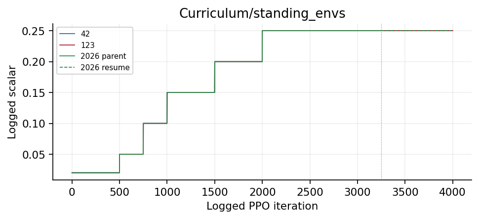
横轴为原日志迭代编号，未平滑。2026实线为保留的parent至3250，虚线为恢复段3250至3999；重复编号不合并为同一训练轮，丢弃parent的3251至3272。训练聚合量不是闭环评估百分比。图3 三个来源的训练日志 Episode_Metrics
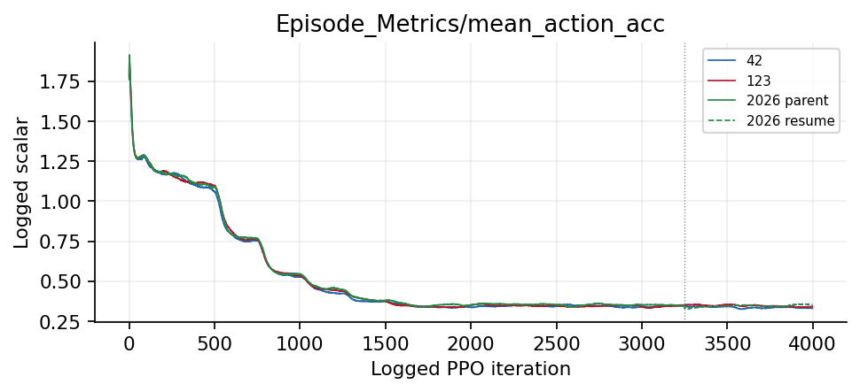
横轴为原日志迭代编号，未平滑。2026实线为保留的parent至3250，虚线为恢复段3250至3999；重复编号不合并为同一训练轮，丢弃parent的3251至3272。训练聚合量不是闭环评估百分比。图4 三个来源的训练日志 Episode_Reward
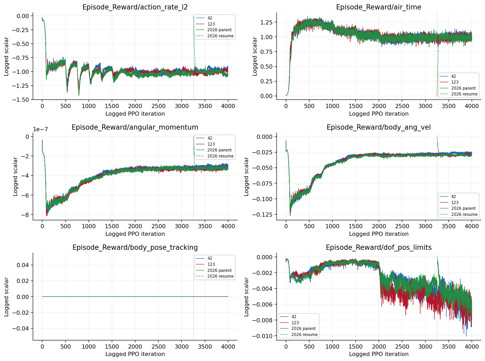
横轴为原日志迭代编号，未平滑。2026实线为保留的parent至3250，虚线为恢复段3250至3999；重复编号不合并为同一训练轮，丢弃parent的3251至3272。训练聚合量不是闭环评估百分比。图5 三个来源的训练日志 Episode_Reward
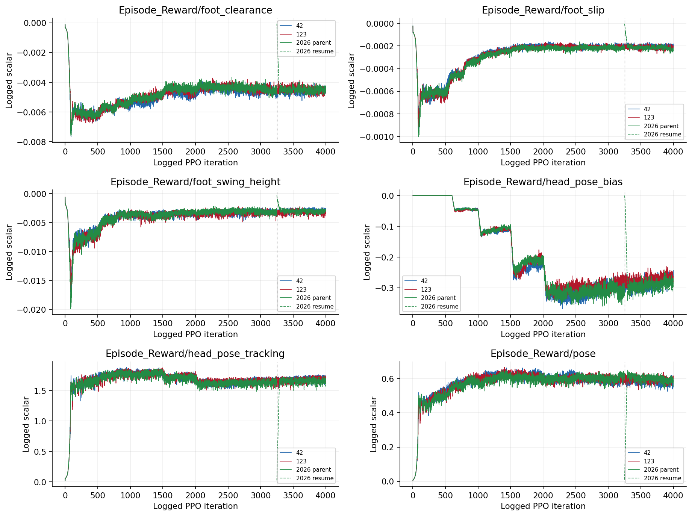
横轴为原日志迭代编号，未平滑。2026实线为保留的parent至3250，虚线为恢复段3250至3999；重复编号不合并为同一训练轮，丢弃parent的3251至3272。训练聚合量不是闭环评估百分比。图6 三个来源的训练日志 Episode_Reward
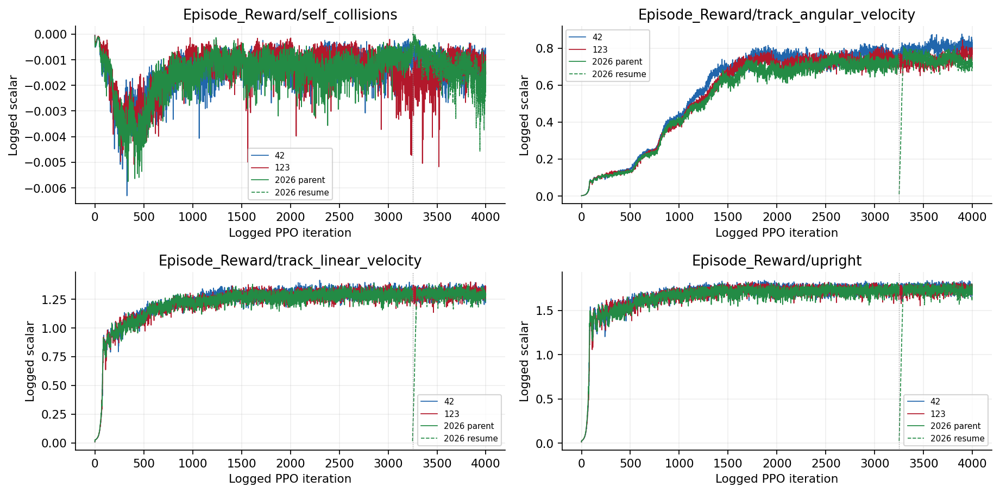
横轴为原日志迭代编号，未平滑。2026实线为保留的parent至3250，虚线为恢复段3250至3999；重复编号不合并为同一训练轮，丢弃parent的3251至3272。训练聚合量不是闭环评估百分比。图7 三个来源的训练日志 Episode_Termination
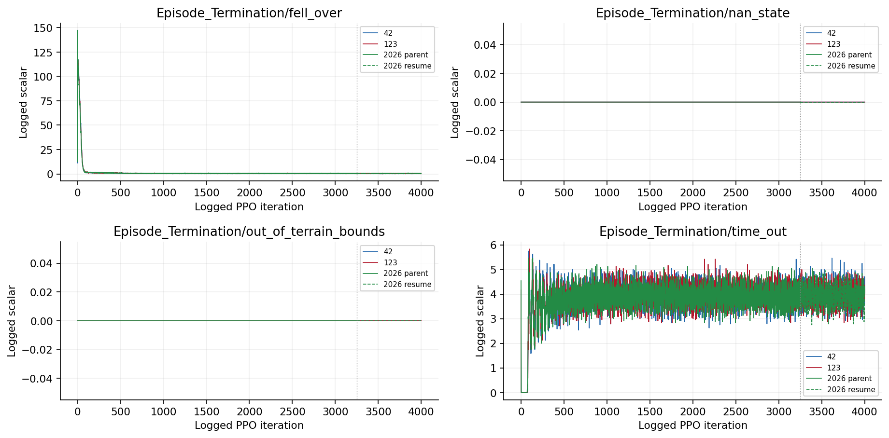
横轴为原日志迭代编号，未平滑。2026实线为保留的parent至3250，虚线为恢复段3250至3999；重复编号不合并为同一训练轮，丢弃parent的3251至3272。训练聚合量不是闭环评估百分比。图8 三个来源的训练日志 Loss
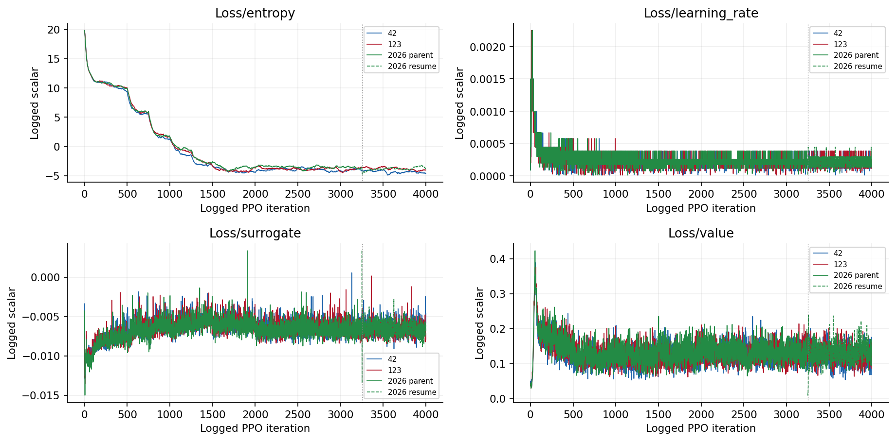
横轴为原日志迭代编号，未平滑。2026实线为保留的parent至3250，虚线为恢复段3250至3999；重复编号不合并为同一训练轮，丢弃parent的3251至3272。训练聚合量不是闭环评估百分比。图9 三个来源的训练日志 Metrics
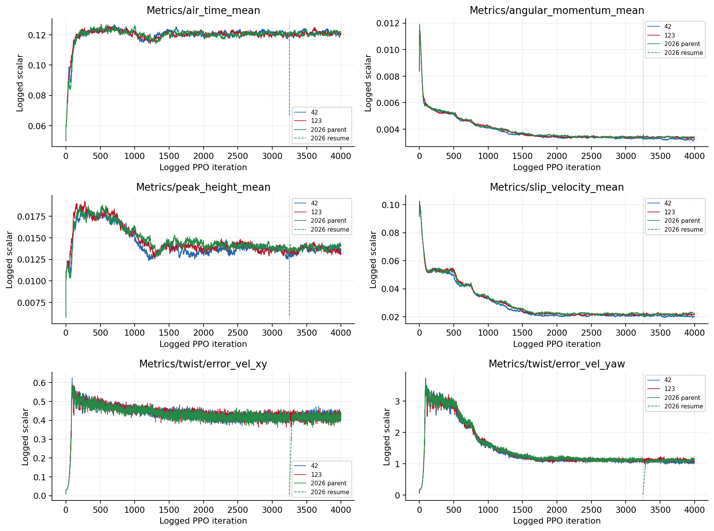
横轴为原日志迭代编号，未平滑。2026实线为保留的parent至3250，虚线为恢复段3250至3999；重复编号不合并为同一训练轮，丢弃parent的3251至3272。训练聚合量不是闭环评估百分比。图10 三个来源的训练日志 Perf
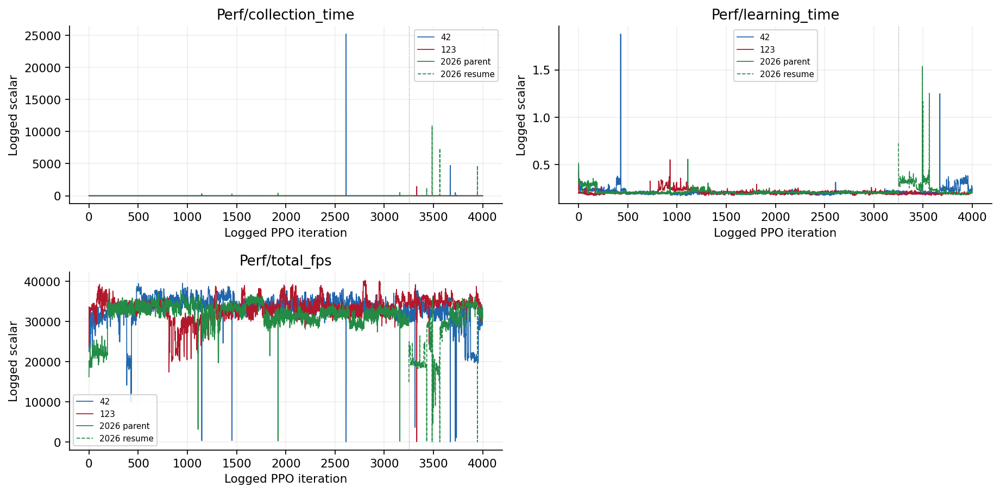
横轴为原日志迭代编号，未平滑。2026实线为保留的parent至3250，虚线为恢复段3250至3999；重复编号不合并为同一训练轮，丢弃parent的3251至3272。训练聚合量不是闭环评估百分比。图11 三个来源的训练日志 Policy
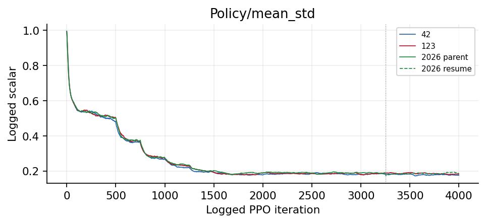
横轴为原日志迭代编号，未平滑。2026实线为保留的parent至3250，虚线为恢复段3250至3999；重复编号不合并为同一训练轮，丢弃parent的3251至3272。训练聚合量不是闭环评估百分比。图12 三个来源的回报与回合长度 迭代轴与时间轴
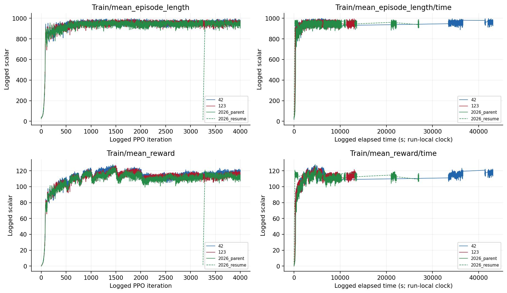
左列横轴为PPO迭代标签，右列为各运行日志elapsed秒，恢复段时钟单独保留，不能看作同一连续墙钟。2026父阶段按3250保存点对应wall_time截断，再与恢复段区分展示，不把/time的秒数误当迭代编号。图13 checkpoint evaluation
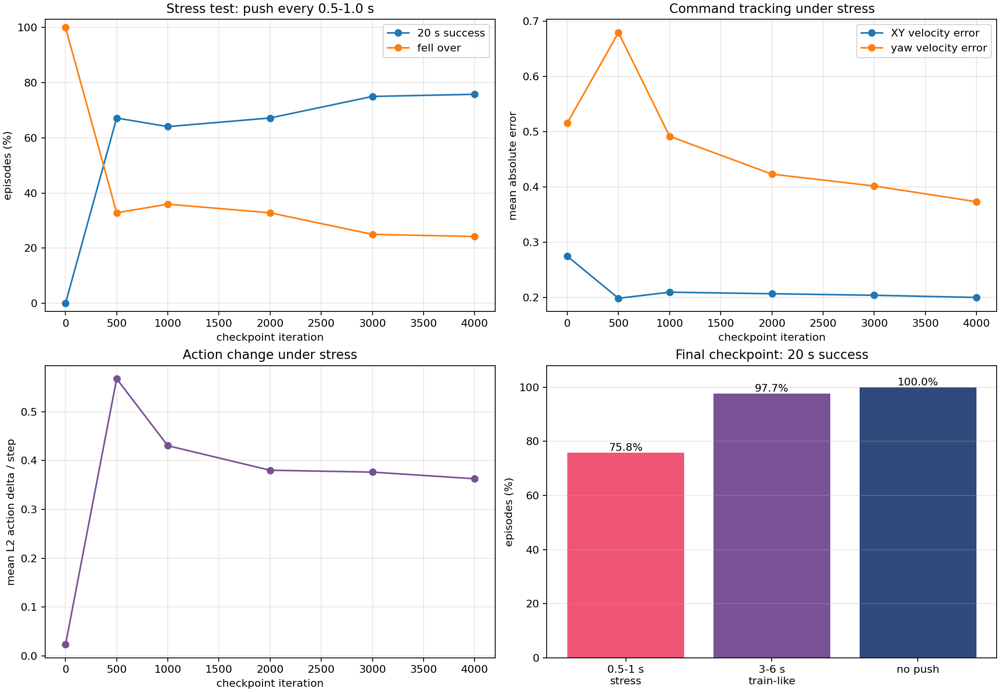
保留原实验图，不改变其样本、区间或协议定义。原图英文标注见本报告名词注释；探索、确认与历史快照不可混合累计。图14 command tracking errors
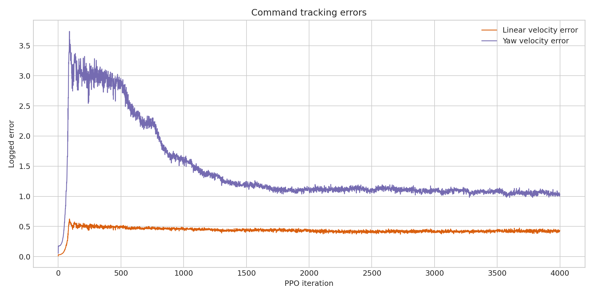
保留原实验图，不改变其样本、区间或协议定义。原图英文标注见本报告名词注释；探索、确认与历史快照不可混合累计。图15 safety and policy metrics
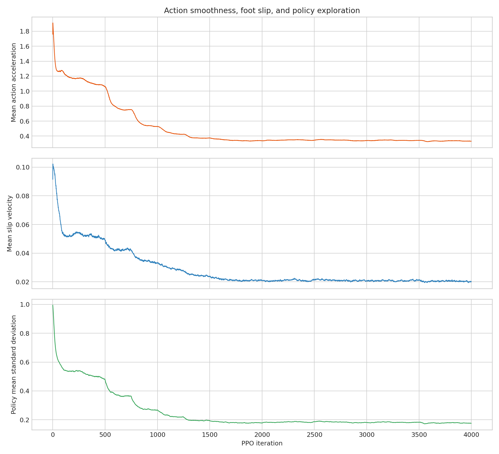
保留原实验图，不改变其样本、区间或协议定义。原图英文标注见本报告名词注释；探索、确认与历史快照不可混合累计。图16 training reward episode
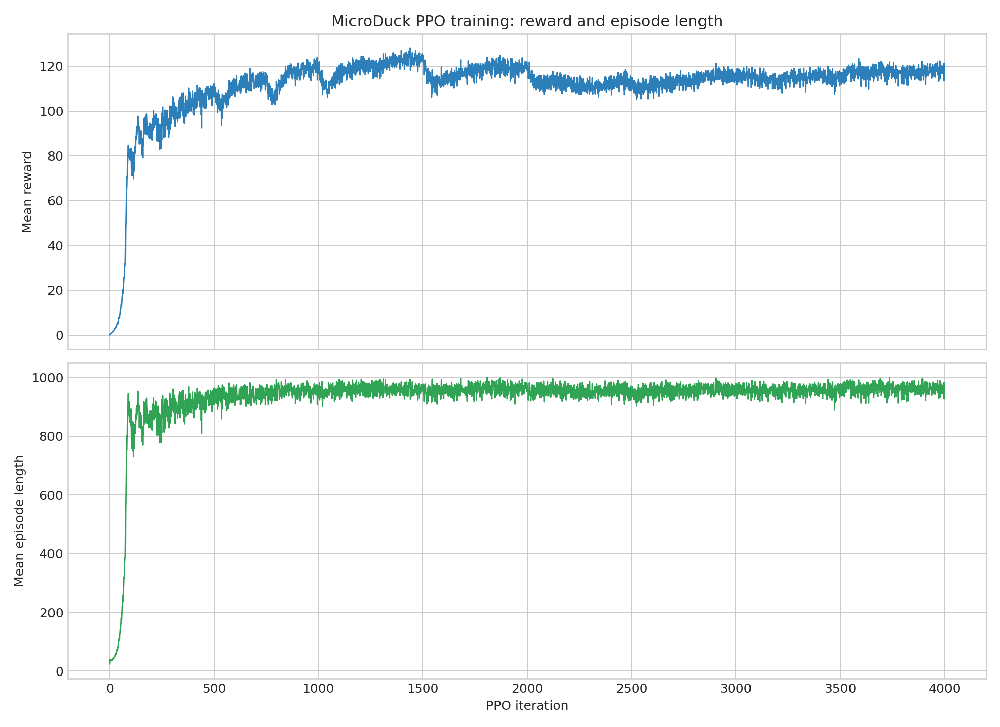
保留原实验图，不改变其样本、区间或协议定义。原图英文标注见本报告名词注释；探索、确认与历史快照不可混合累计。限制与不能支持的结论
只在本地仿真中复现，没有实体或sim-to-real证据。恢复会重建环境、延迟历史和随机状态，不是不中断训练的逐位恢复。2026多出的0.025%预算必须披露，但没有证据将鲁棒性差异归因于它。
证据入口与复核范围
逐文件SHA及原始路径见输入清单；本轮复算范围见数据审计。下列输入在生成后再次核对未改。
这项工作的价值
本工作的价值是提供来源清楚、真实规模、可做同协议比较的三个本地策略和完整训练轨迹，使后续故障差异不再建立在小型替代模型或单段视频上。它是实验基础设施成果，不应单独包装为新算法。